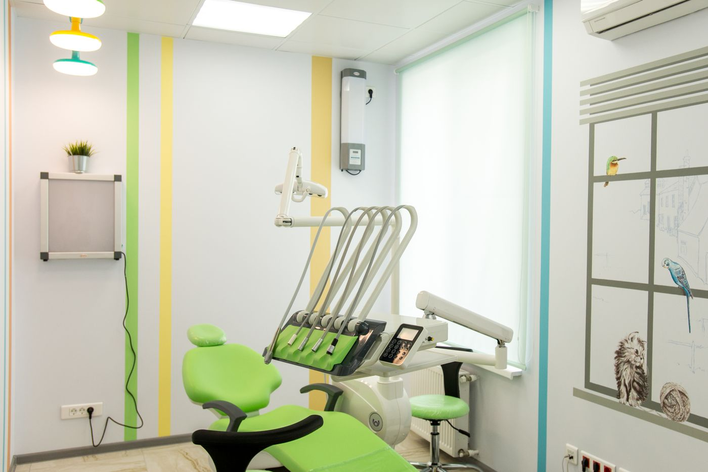

Лечение зубов
Направление, указанное на сайте клиники.
уточняетсястоимость — после консультации
Выберите направление, удобный адрес и время — заявка придёт администратору в Telegram, он перезвонит и подтвердит приём.

Это концепт. С вашими фото и правками будет ещё лучше
Направления — по тексту на текущем сайте клиники. Цены и перечень услуг уточняются.
Направление, указанное на сайте клиники.
Включая съёмные протезы (на сайте — новость о нейлоновых протезах, 2013).
Если пока не знаете, что нужно, — администратор подберёт приём.
Что увидит пациент до записи.
Щеглов Виталий Николаевич — указан на текущем сайте. Остальные врачи и их профили — уточняются.
Номер и скан лицензии на медицинскую деятельность на текущем сайте не опубликованы — уточняется. В новой версии — отдельный блок с документом.
Цен по направлениям на сайте нет (только шаблонная «Услуга №1») — уточняется.
Четыре шага — и заявка у администратора в Telegram. Это рабочий макет: попробуйте.
Стоимость и план лечения врач определяет после осмотра.
На сайте указаны два адреса.
Часы работы на сайте не указаны — уточняются. Время приёма подтверждает администратор.
Так это будет работать: администратор получает заявку с направлением, адресом и желаемым временем и перезванивает, чтобы подтвердить приём. Сейчас это макет — ничего не отправлено и не сохранено.
Только то, что опубликовано на сайте клиники. Демо не содержит медицинских обещаний.
Цены на текущем сайте не опубликованы — уточняется. Стоимость определяется после консультации.
На сайте: ул. Пионеров, 13а и ул. Петра Сухого, 63.
На сайте часы не указаны; уточняется.
Список врачей — уточняется. На сайте указан главный врач Щеглов Виталий Николаевич.
Часы работы — уточняются.